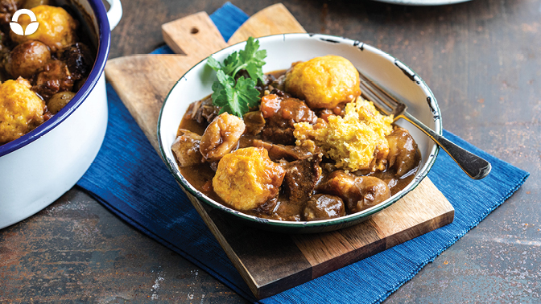

Minah's Beef Stew With Dombolo
Beef stew is a hearty, warm meal across the world, that leaves you with that aaaah feeling! Dombolo is a traditional South African steamed bread, this one is easy to make as it uses baking powder.
This Beef Stew with dombolo - Minah's beef stew is even more special as we celebrate our South African heritage because we ran a competition amongst our team to get their family favourites. Minah is a cashier at our Middelburg branch
Ingredients
For Beef Stew
- 20ml (4 tsp) olive oil
- 1 onion, chopped
- 3 carrots, peeled and diced
- 2 mixed bell peppers, chopped
- 2kg stewing beef, cut into large pieces
- 1kg Food Lover's Potjie Potatoes
- Fresh chillies, chopped to taste and optional
- 1.5L (6 cups) beef stock
- 30ml (2 Tbsp) Worcestershire sauce
- 15ml (1 Tbsp) Six Gun Spice
Directions
For beef stew
- Heat a large pot on a high heat with the olive oil and fry the onions, carrots and bell peppers for about 5-6 minutes
- Remove from the pot and brown the stewing meat. Add the onion mixture back into the pot along with the rest of the ingredients.
- Lower the heat and cook for about 2 ½ hours on a low heat with a lid.
To thicken
- Melt the butter and combine with the corn flour to make a slurry, add to the stew along with the dombolo.
For the dombolo
- Combine all ingredients to form a dough. Make golf ball sized balls and place them in the stew.
- Cook on a medium heat with a lid for about 30 minutes or until cooked
- Garnish the stew with fresh parsley and enjoy!